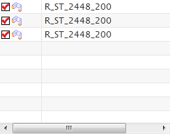
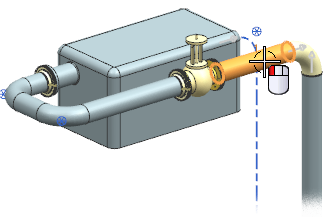
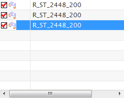

在型材浏览器中查看型材
-
在机械管线布置工具条上的编辑型材下拉菜单中，选择编辑型材
 。
。
将会在型材浏览器中列出管线中的所有型材。
-
在图形窗口中选择最短的那一段型材。

-
将会在浏览器中高亮显示对应的型材。

-
点击信息
 。
。滚动信息窗口到管线布置特性这一节：
------------------ 管线布置特性 PLibPartType = 0 D1 = 219.100000 NPS = 200.000000 S1 = 5.600000 WEIGHT = 26.400000 APPLICATION Routing Mechanical DESCRIPTION Steel Pipe 219.1 DIAMETER 219.1
向下滚动窗口以查看型材的对象特性：
------------------- 对象特性 LENGTH = 991.128844 Discipline Piping IDENTIFIER ROUTING_LEVEL 0 Specification None 直线 - ID 49702 |_________R_ST_2448_200*
-
关闭信息窗口。
-
点击根据选择调整视图
 。
。
型材将在图形窗口中最大化显示。
-
点击关闭。